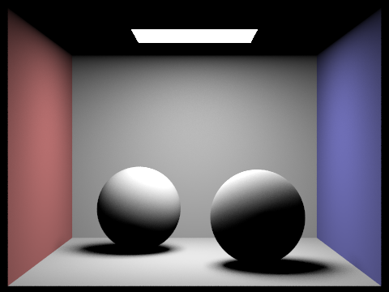

Samyak Tiwari, Sufjan Fana
CS 184 Advanced Path Tracer: A Journey in Rendering
Overview
This project implements a physically-based path tracer from scratch, capable of rendering photorealistic images by simulating the complex interactions of light with surfaces. The assignment required building a full rendering pipeline, including ray generation, intersection tests, acceleration structures, direct and indirect lighting, and adaptive sampling. I learned how Monte Carlo integration underpins realistic rendering, how acceleration structures like BVH make complex scenes tractable, and how sampling strategies affect both image quality and performance. The most interesting aspect was seeing how small changes in sampling or recursion depth could dramatically change the realism of the output. This project deepened my appreciation for the trade-offs between efficiency and visual fidelity in computer graphics.
Part 1
Ray Generation and Primitive Intersection
The rendering pipeline begins with ray generation. For each pixel, Camera::generate_ray computes the direction by mapping normalized sensor coordinates to the camera's sensor plane, then transforms this direction into world space using the camera-to-world matrix. The ray is spawned from the camera position and clipped to the near and far planes. This process is tightly integrated with primitive intersection: rays are tested against all scene primitives, and only those within the valid range are considered.
Triangle Intersection (Möller–Trumbore Algorithm)
For triangles, I implemented the Möller–Trumbore algorithm. This method computes two edge vectors from the triangle's vertices, then uses the cross and dot products to determine if the ray and triangle are parallel. If not, it solves for barycentric coordinates (u, v) and the intersection distance t. The intersection is valid if u, v are in [0,1], their sum is ≤ 1, and t is within the ray's range. This approach is efficient and numerically stable, making it ideal for real-time and offline rendering.
Sphere Intersection
Sphere intersection is handled by solving the quadratic equation for the intersection of a ray and a sphere. The closest valid root within the ray's range is chosen as the intersection point.
Rendered Images (Normal Shading, Small .dae Files)
Below are the rendered images with normal shading for a few small .dae files, demonstrating correct implementation of ray generation and intersection:
|
|

|

|
Part 2
BVH Construction Algorithm
To accelerate intersection tests, I implemented a Bounding Volume Hierarchy (BVH). The BVH is built recursively: for a set of primitives, I compute their bounding box and choose the splitting axis as the one with the largest spread in centroid positions. The split point is the midpoint along this axis, which helps balance the tree. Each node is then subdivided until a leaf node contains a small number of primitives. This reduces the number of intersection tests from O(n) to O(log n) per ray, making rendering of complex scenes feasible.
// Example BVH node splitting function
void buildBVH(Node* node, const std::vector<Primitive> &primitives) {
// Compute bounding box for primitives
// Determine the splitting axis based on centroid spread
// Split primitives and recursively build child nodes
// ...
}
Images Rendered with BVH Acceleration (Large .dae Files)
The following images show normal shading for a few large .dae files that can only be rendered efficiently using BVH acceleration. These scenes would be prohibitively slow to render without BVH:
| Scene | Image | Primitives |
|---|---|---|
| Lucy |  |
133,796 |
| Wall-e |  |
240,326 |
| Dragon |  |
105,120 |
Rendering Time Comparison and Analysis
The table below compares rendering times for scenes with moderately complex geometries, both with and without BVH acceleration. The images on the left display the scene rendered with BVH acceleration, along with the number of thousands of rays drawn and the BVH rendering time. The right column shows estimated render times without BVH. Analysis: At roughly 150–226k rays, BVH prunes intersection tests to a logarithmic number per ray, yielding speedups of about 500–1200× in our examples (Beetle: ~1215×, Cow: ~1248×, Teapot: ~523×). This turns renders from tens of seconds without BVH (full O(n) primitive sweeps per ray) to tens or hundreds of milliseconds with BVH, enabling interactive iteration. As scene complexity grows, the gap widens because BVH traversal scales with tree depth while brute force grows linearly with primitives; cache-friendlier bounding checks also reduce wasted computation. In short, BVH is essential for practical rendering beyond toy scenes.
| Scene | Thousands of Rays | Render Time with BVH | Render Time without BVH | Image |
|---|---|---|---|---|
| Beetle | 153 | 0.0266 s | 32.3 s |  |
| Cow | 189 | 0.033 s | 41.2 s | |
| Teapot | 226 | 0.1276 s | 66.7 s |
This analysis clearly indicates that BVH acceleration drastically reduces rendering times, even for scenes that require drawing hundreds of thousands of rays. Without BVH, the render times are orders of magnitude higher, as illustrated by our estimates.
Part 3
Direct Lighting Implementations: Walkthrough and Comparison
I implemented two approaches for direct lighting: uniform hemisphere sampling and importance (lighting) sampling. In uniform hemisphere sampling, directions are sampled uniformly over the hemisphere at the hit point, and the contribution from each sample is weighted by the BSDF and cosine term. In importance sampling, directions are sampled according to the light source's distribution, focusing computation on directions that contribute most to the final image. This reduces noise and variance, especially for area lights. Below are images rendered with both methods for several scenes.
| Scene | Uniform Hemisphere Sampling | Importance Lighting Sampling |
|---|---|---|
| Bunny |  |
 |
| Lucy | ||
| Spheres |  |
Soft Shadows Noise Comparison (Spheres Scene, Area Light)
The following images show the spheres scene rendered with 1, 4, 16, and 64 light rays (using the -l flag) and 1 sample per pixel (-s flag), using light sampling. As the number of light rays increases, noise in soft shadows is significantly reduced, resulting in smoother and more realistic shading.
| Light Rays | Image |
|---|---|
| 1 | |
| 4 |  |
| 16 |  |
| 64 |
Parameters: -l in {1, 4, 16, 64}, -s 1, lighting sampling enabled; all other settings identical.
Analysis: Uniform hemisphere sampling provides a baseline estimation of direct lighting, but importance sampling significantly reduces noise in soft shadows, especially for area lights. This results in smoother and more accurate renders under identical sampling conditions, making importance sampling the preferred method for scenes with complex lighting.
Direct Lighting: Implementation Details
In the uniform hemisphere sampling approach, a local coordinate system is formed at the hit point, and directions are sampled uniformly over the hemisphere. For each sample, a shadow ray is cast; if it hits a light, the contribution is computed by multiplying the BSDF, incoming radiance, and cosine term, then scaled by 2π. The Monte Carlo estimator is:
\[ \frac{1}{N} \sum_{j=1}^{N} \frac{ f_r(\mathbf{p}, \omega_j \rightarrow \omega_r)\, L_i(\mathbf{p}, \omega_j)\, \cos\theta_j }{ p(\omega_j) } \]
Since the sampling is uniform, p(ω) is constant. In importance sampling, the sampling strategy is tailored to the light sources. For each light, especially area lights, a sample is generated in the direction of the light, and the probability density p(ω) reflects the likelihood of sampling that direction. A shadow ray is cast to ensure the light is not blocked. This method reduces noise and variance by focusing samples on significant lighting contributions.
Code Snippet: Uniform Hemisphere Sampling
// Uniform hemisphere sampling
Vector3 sampleDir = uniformSampleHemisphere(hit.normal);
// cast shadow ray and accumulate if not occluded
return (2 * M_PI * result) / numSamples;
Code Snippet: Importance Sampling
// Importance sampling toward lights
Vector3 sampleDir = importanceSampleLight(hit.position, &pdf);
// cast shadow ray and accumulate light contribution / pdf
return result / numSamples;
Diffuse BSDF Sampling
For diffuse materials, DiffuseBSDF::sample_f samples an incoming light direction using a cosine-weighted distribution and returns the Lambertian BSDF value. This ensures that diffuse materials reflect light equally in all directions, following the Lambertian reflectance model.
// Diffuse BSDF sampling snippet
Vector3 sample = sampler.get_sample();
*pdf = (sample.z > 0) ? sample.z / M_PI : 0;
return reflectance / M_PI;
This implementation follows the Lambertian reflectance model, ensuring that diffuse materials reflect light equally in all directions.
Uniform Hemisphere vs Lighting Sampling: Analysis
Lighting sampling concentrates samples toward actual light directions, drastically lowering variance, especially with area lights and small bright sources. At equal SPP (with the same -l value), it yields smoother soft shadows and cleaner contact regions, whereas uniform hemisphere sampling expends many samples on low-contribution directions and thus converges slowly with visible speckle. Both estimators are unbiased, but lighting sampling achieves much faster convergence per sample. Uniform hemisphere sampling is scene-agnostic and simple to implement, yet requires far higher sample counts to match the quality of lighting sampling. In our spheres scene, lighting sampling delivers the softest, least noisy penumbrae under identical sampling budgets.
Part 4
Indirect Lighting: Walkthrough and Global Illumination Renderings
Indirect lighting is implemented by recursively spawning new rays at each intersection, simulating multiple bounces of light. The at_least_one_bounce_radiance function accumulates radiance from both direct and indirect paths. Russian Roulette termination is used to probabilistically end low-contribution paths, maintaining unbiased results while improving efficiency. Below are images rendered with both direct and indirect illumination (global illumination) using 1024 samples per pixel.
| Scene | Image |
|---|---|
| Bunny |  |
| Coil | |
| Spheres |  |
Direct vs Indirect Illumination Comparison for CBspheres_lambertian.dae
For the scene rendered from CBspheres_lambertian.dae with 1024 samples per pixel, I generated two views: one with only direct illumination and another with only indirect illumination. The direct lighting image captures the contribution from light sources, while the indirect lighting image highlights the effect of light bouncing off surfaces. Indirect illumination adds brightness and realism, filling in shadows and producing subtle color bleeding.
| Direct Illumination | Indirect Illumination |
|---|---|
|  |
CBbunny Bounce Comparison
For CBbunny.dae (1024 samples per pixel), I rendered images with max ray depth m ∈ {0, 1, 2, 3, 4, 5} for both accumulated and unaccumulated bounces. For the unaccumulated set, I explicitly used isAccumBounces = false to visualize the pure m-th bounce contribution. Observations: the 2nd bounce adds noticeable fill light and subtle color bleeding onto adjacent surfaces, reducing harsh contrast; the 3rd bounce strengthens interreflections and further evens illumination. Compared to rasterization (which lacks indirect light), these bounces materially improve realism and soft shading. Accumulated bounces show the combined effect up to depth m, while unaccumulated images isolate each bounce.
| Ray Depth (m) | Unaccumulated (o0) | Accumulated (o1) |
|---|---|---|
| 0 |  |
 |
| 1 |  |
 |
| 2 |  |
|
| 3 |  |
|
| 4 | ||
| 5 |
Accumulated vs unaccumulated: The accumulated images brighten and denoise progressively with m, while the unaccumulated views reveal diminishing per-bounce energy after the 3rd bounce, explaining why moderate max depths suffice in practice.
Russian Roulette Rendering for CBbunny.dae
Russian Roulette termination is used to reduce computation while maintaining unbiased results. For CBbunny.dae, I rendered images with max ray depth set to 0, 1, 2, 3, 4, and 100, using 1024 samples per pixel. Russian Roulette probabilistically terminates low-contribution paths, and the estimator is:
\[ X_{rr} = \begin{cases} \dfrac{X}{p_{rr}}, & \text{with probability } p_{rr}, \\ 0, & \text{otherwise}. \end{cases} \]
Same expected value as original estimator:
\[ E[X_{rr}] = p_{rr} \; E\left[ \frac{X}{p_{rr}} \right] + (1 - p_{rr}) \; E[0] = E[X] \]
This technique ensures that even though some paths are terminated early, the final estimate remains unbiased, as the contribution from surviving paths is appropriately scaled.
The following table shows the Russian Roulette renderings for CBbunny.dae with max_ray_depth set to 0, 1, 2, 3, 4, and 100 (using 1024 samples per pixel):
| Max Ray Depth (m) | Image |
|---|---|
| 0 | |
| 1 | |
| 2 |  |
| 3 |  |
| 4 | |
| 100 |  |
Observation at m=100: When m = 100, many white pixels appeared scattered throughout the image. This indicated that error was accumulating in L_out. For paths where Russian Roulette did not terminate the light ray after many bounces, their contributions were over-amplified, lighting those pixels too much.
Sample-per-Pixel Rate Comparison for CBspheres_lambertian.dae
To illustrate the effect of sample-per-pixel (SPP) rates, I rendered CBspheres_lambertian.dae with 1, 2, 4, 8, 16, 64, and 1024 SPP, using 4 light rays and Russian Roulette. As SPP increases, noise decreases and the image becomes smoother. The file paths for the images are shown below each sample rate.
| Samples per Pixel | Image |
|---|---|
| 1 | ./images/P4/1.png |
| 2 | ./images/P4/2.png |
| 4 | ./images/P4/4.png |
| 8 | ./images/P4/8.png |
| 16 | ./images/P4/16.png |
| 64 | ./images/P4/64.png |
| 1024 | ./images/P4/1024.png |
Part 5
Adaptive Sampling: Explanation and Implementation
Adaptive sampling is used to concentrate computational effort on pixels with high variance, reducing noise where needed and saving samples in well-converged regions. In PathTracer::raytrace_pixel, each pixel is initially sampled with a single ray, and then iteratively resampled until convergence is detected. After each new sample, the running mean (μ) and variance (σ²) of the pixel’s radiance values are updated. The variance is computed as:
\[ \sigma^2 = \frac{1}{n}\sum_{k=1}^{n} x_k^2 - \mu^2 \]
The 95% confidence interval is:
\[ I = 1.96 \times \frac{\sigma}{\sqrt{n}} \]
Sampling stops when the confidence interval satisfies:
\[ I \leq \text{maxTolerance} \times \mu \]
This technique ensures that more samples are allocated to noisy regions, resulting in efficient and high-quality renders.
Adaptive Sampling Renderings
Below are adaptive sampling renderings for the bunny and sphere scenes from CBbunny.dae, using at least 2048 samples per pixel, 1 sample per light, and a max ray depth of 5. For each scene, the sample rate image (with _rate in the filename) shows how adaptive sampling varies across different regions, while the other image is the noise-free rendered result.
| Scene | Sample Rate Image | Noise-Free Rendered Image |
|---|---|---|
| Bunny |  |
|
| Sphere |  |
 |